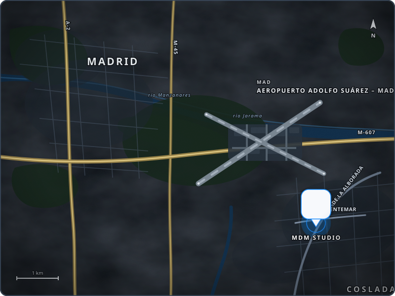

01
Bodas y celebraciones
El día entero, sin que te des cuenta de que grabo. Un vídeo que se pueda ver mil veces.
Texto definitivo y fotos, próximamente.
02
Vídeo corporativo y eventos
Jornadas, presentaciones y resúmenes de eventos listos para compartir y publicar.
Texto definitivo y fotos, próximamente.
03
Vídeos musicales
De la idea al plano final: dirección, cámara y ritmo al servicio de la canción.
Texto definitivo y fotos, próximamente.
04
Montaje y color
Si ya tienes las tomas, las ordeno, corto y doy el color que necesita la historia.
Texto definitivo y fotos, próximamente.
05
Tomas con dron
Plano general y vistas que la cámara a pie no puede dar. Con licencias y seguro.
Texto definitivo y fotos, próximamente.